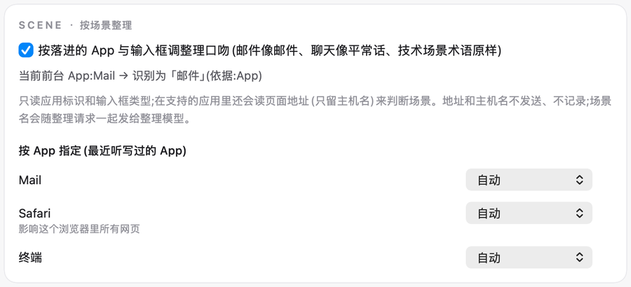
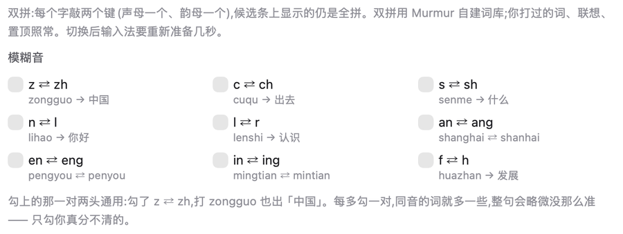
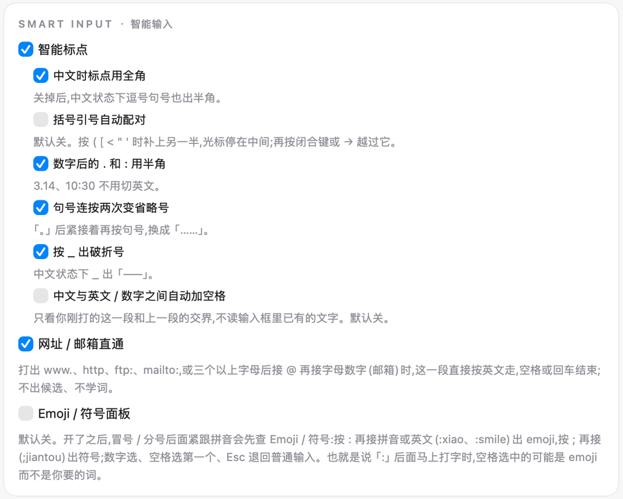
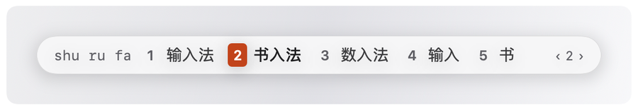

装好后第一句
提示词技能
落进输入框的是普通整理稿。下面三条同时满足时,空一行再附最多三条「做法」:
- 这一句不少于 40 个字。
- 判得出是单一一种需求(判成两种以上或判不出时不附)。
- 你没在话里说明做法,比如「先别改」「只解释」「顺手改」。
不满足就只落整理稿。少于 15 个字的句子不走技能。整理失败或翻译时也不附。
编程七个:修 bug、写新功能、改 / 重构代码、解释代码、代码审查、写计划、写测试。
聊天五个:调研、帮我写、帮我做决定、总结提炼、回复消息。
在 AI 编程工具里用编程那七个;在 AI 对话工具里十二个都可选。其它被认成 AI 助手的 App 里是聊天五个。终端里不开。
技能页有效果演示和十二个技能的名字,那里也能粘一句试。
开启后,够长的那一句的转写文字会多发一次给整理用的同一家模型厂商。不新增接收方,不发录音,不发你在哪个窗口。「整理」设成「不动」时技能也不发。
设置 → 整理 → 提示词技能
按场景整理
照常听写,不用多按键。卡上显示当前前台 App 被识别成哪个场景,也可以给某个 App 指定场景。
整理设成「不动」时这一项不起作用。
它读应用标识和输入框类型,在支持的浏览器里还读页面的主机名。主机名不发送。场景名随整理请求发给整理模型。

装拼音输入法

拼音怎么打
双拼与模糊音
选好双拼方案后照常打字,候选条上仍显示全拼。切换后输入法要准备几秒。
勾了 z ⇄ zh,打 zongguo 也出「中国」。每多勾一对,整句会略微没那么准,只勾你真分不清的。

智能标点与网址直通

候选窗外观
字号三档:小、标准、大。强调色五种:珊瑚、蓝、绿、紫、石墨。
横排或竖排。竖排时每行一个候选,长候选折行,不截断。深浅跟随系统外观。

云候选
候选条末尾有一个固定的「云」位。点它或按 ⌥↩,才会发请求。
结果填在同一个位置。再点一次或再按一次 ⌥↩ 才上屏。它不占数字键,也不会自己上屏。密码框和拒绝名单里的 App 里不工作。
开启后,尚未上屏的拼音会发到 Murmur 服务器,并转给第三方模型服务来猜整句;据此可以推断你正在输入的内容。不发已上屏的文字、不发你打过的词、不发你在哪个 App。关掉后不再发新的请求;已经发出的收不回。
快捷短语
打字时。自己写「编码 → 短语」,比如 dz → 你的地址。在 Murmur 拼音里打编码,候选第一个就是这条短语。
说话时。在听写模式下整句说出触发词,落下整段模板。说的话多一个字就不算命中。
输入法的:设置 → 输入法 →「词典 · 我打过的词(输入法学的)」卡 →「管理快捷短语…」。
听写的:主窗口侧栏「词典」页,「快捷短语」卡。
dz → 你的地址
你打过的词
听写时,这些词当提示词随识别请求发给识别服务商,和词典一样。选离线识别就不出机。
按 ⌥⇧Space 让 AI 整理这句时,与这句沾边的词随整理请求出机,最多 500 个。选离线识别也一样。
第一版不跨设备。
设置 → 输入法 →「词典 · 我打过的词(输入法学的)」卡:关「学我平时打的字」就不再学新词;关「允许 AI 参考我的用词」,AI 整理时一个词都不发。
清掉:设置 → 系统 →「清除数据…」。
~/Library/Application Support/Murmur/lexicon.sqlite
更新记录
0.53 · 新增
- Murmur 拼音输入法随包,在 设置 → 输入法 里安装、更新、卸载。
- 上屏后 1.5 秒内按退格,整个词退回拼音重选。
- 双拼:小鹤、自然码。模糊音 9 对,默认全关。
- 智能输入:标点规则、网址与邮箱直通、Emoji 面板。Emoji 面板默认关。
- 候选窗外观:字号三档、强调色五种、横排或竖排。深浅跟随系统。
- 云候选(预览):按 ⌥↩ 让云端猜整句。默认关,要登录。
- 输入法里按 ⌥⇧Space,让 AI 整理这一句。
- 提示词技能:在 AI 编程工具、AI 对话工具和部分 AI 桌面应用里按听写键说需求。落下的是整理好的原话,判得出要做什么时末尾附最多三条做法。默认关。
- 按场景整理:按落进的 App 调整理口吻。默认开。
- 设置页新增「输入法」页签,输入法的设置都在这一页。
- 历史里每条都有「听错了」,改完按 ⌘↩ 保存。
- 登录页可以直接申请名额。
- 菜单栏「关于」显示版本。每天查一次官网,有新版就在菜单栏提示,不自动下载。
- 被强制退出或崩溃后重开,上次没写完的那句留在历史里。
0.53 · 修复
- 读不到选区的输入框也能直接落字,不用再自己按 ⌘V。
- 切到别的窗口再切回原来的输入框,60 秒内字自动进去。
- 「已插入」只在核对过后显示。没核对时写「已插入(未核对)」。
- 录音时麦克风没声音,胶囊上会提示。
- 处理中分「识别中」和「整理中」。整理最长等 45 秒。
- 英文界面不再出现中文报错。
- 四个清空按钮合成一个:设置 → 系统 →「清除数据…」。